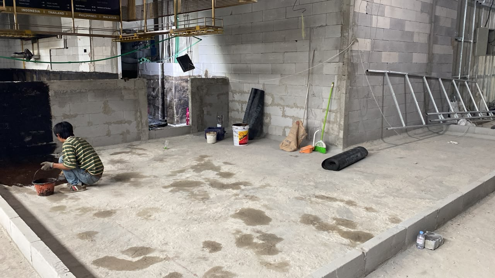

Membran Bakar
Solusi waterproofing untuk atap dak beton dan rooftop menggunakan sistem membran bakar. Jenis material dan metode pemasangan disesuaikan dengan kondisi area.
Apakah atap dak beton, rooftop, kamar mandi, atau area bangunan Anda mengalami kebocoran? Sairi Bangun Mandiri melayani konsultasi dan pekerjaan waterproofing untuk berbagai kebutuhan bangunan di kawasan BSD City dan sekitarnya.
Kami membantu menentukan metode penanganan berdasarkan kondisi lapangan, jenis kebocoran, dan kebutuhan perlindungan bangunan.
Konsultasi via WhatsApp
Sairi Bangun Mandiri menyediakan layanan konsultasi waterproofing dan perbaikan kebocoran untuk rumah tinggal, ruko, gedung perkantoran, apartemen, hotel, serta bangunan komersial. Setiap pekerjaan perlu memperhatikan sumber kebocoran, kondisi permukaan, dan sistem perlindungan yang sesuai.
Bagi Anda yang mencari jasa waterproofing BSD City, kontraktor waterproofing BSD, atau ahli perbaikan dak bocor, tim SBM dapat membantu mengonsultasikan kebutuhan pekerjaan sebelum menentukan metode penanganan.
Solusi waterproofing untuk atap dak beton dan rooftop menggunakan sistem membran bakar. Jenis material dan metode pemasangan disesuaikan dengan kondisi area.
Pelapisan kedap air untuk area bangunan tertentu seperti dak beton, kamar mandi, dan area lain sesuai karakteristik material serta kebutuhan proyek.
Penanganan kebocoran melalui retakan atau celah pada struktur beton menggunakan material injeksi yang dipilih berdasarkan kondisi kebocoran.
Pekerjaan pengisian rongga atau celah pada area beton dan konstruksi sesuai hasil pemeriksaan serta kebutuhan teknis proyek.
Pelapisan lantai untuk kebutuhan perlindungan dan finishing pada area tertentu, termasuk bangunan komersial dan fasilitas industri.
Layanan jasa coring beton untuk kebutuhan pembuatan lubang pada struktur beton, seperti jalur instalasi pipa, kabel, dan kebutuhan mekanikal elektrikal. Diameter dan lokasi pengeboran disesuaikan dengan kebutuhan proyek serta kondisi struktur bangunan.
Selain BSD City, Anda juga dapat mengonsultasikan kebutuhan pekerjaan waterproofing untuk lokasi di kawasan sekitar, antara lain:
Lokasi proyek dan cakupan pekerjaan akan dikonfirmasi saat konsultasi dengan tim Sairi Bangun Mandiri.
Kebocoran tidak selalu berasal dari permukaan yang terlihat basah. Air dapat merembes melalui retakan beton, sambungan, pertemuan dinding dan lantai, atau lapisan waterproofing yang sudah mengalami kerusakan.
Karena itu, pemilihan metode perbaikan sebaiknya dilakukan setelah memahami kondisi area. Pemeriksaan membantu menentukan persiapan permukaan, material, dan tahapan pekerjaan yang sesuai.
Sairi Bangun Mandiri telah menangani berbagai kebutuhan waterproofing dan perbaikan konstruksi sejak 2010. Konsultasikan kondisi bangunan Anda untuk mendapatkan arahan awal mengenai kebutuhan pekerjaan.
Silakan hubungi Sairi Bangun Mandiri untuk mengonsultasikan lokasi dan kebutuhan pekerjaan di BSD City. Cakupan serta pengaturan survei dikonfirmasi berdasarkan proyek.
Ya, Anda dapat mengonsultasikan kondisi dak beton yang mengalami kebocoran. Penanganan akan disesuaikan dengan sumber kebocoran dan kondisi permukaan.
SBM melayani konsultasi pekerjaan membran bakar dan injeksi beton. Jenis material dan metode pelaksanaan ditentukan berdasarkan kebutuhan serta kondisi lapangan.
Hubungi SBM melalui WhatsApp. Sertakan lokasi proyek, jenis bangunan, area yang mengalami kebocoran, dan foto kondisi jika tersedia.
Sampaikan lokasi proyek dan kondisi kebocoran kepada tim Sairi Bangun Mandiri.
Hubungi SBM via WhatsApp